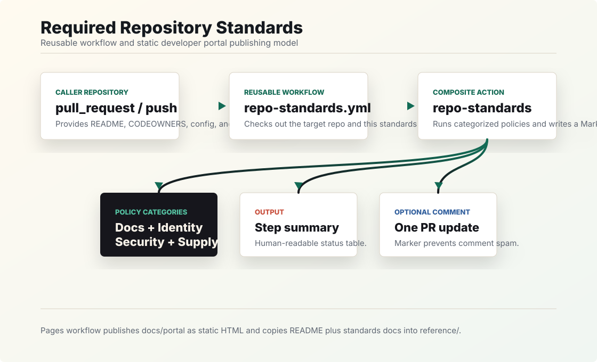

Contributor clarity
Every repository gets a real entry point with a root README that tells people what they are looking at.
Required workflow starter kit
A practical home for adopting lightweight repository standards, understanding the automation, and helping every team ship with a clear README, accountable ownership, and supply-chain visibility.
Why it exists
Every repository gets a real entry point with a root README that tells people what they are looking at.
CODEOWNERS gives reviewers, maintainers, and automation a dependable map for responsibility.
One workflow can be called by many repositories while still supporting caller-specific checks and config.
Quickstart
Add this workflow to a repository that should be validated. Replace
OWNER with the account or organization that owns this
standards repository.
name: Required Repository Standards
on:
pull_request:
push:
branches:
- main
permissions:
contents: read
issues: write
pull-requests: write
jobs:
repo-standards:
uses: OWNER/github-repo-standards/.github/workflows/repo-standards.yml@mainDefault standards
Check 010
Validates a root-level README file and enforces configurable
minimum content through REQUIRED_README_PATH and
MIN_README_BYTES.
Check 020
Accepts CODEOWNERS or .github/CODEOWNERS
when at least one non-comment entry includes an owner.
Checks 030-060
Requires security reporting guidance, contributor workflow docs, AI agent guardrails, and root ignore rules for local/generated artifacts.
Review policy rulesChecks 070-090
Requires dependency update automation, security or supply-chain analysis, and ownership metadata for team operations or catalogs.
Explore platform controlsArchitecture
The reusable workflow checks out the caller repository, checks out this standards repository at the workflow ref, runs the composite action, and optionally updates a single PR comment.

Extend
Place focused shell checks in the caller repository and pass their directory to the reusable workflow. Bundled checks run first.
jobs:
repo-standards:
uses: OWNER/github-repo-standards/.github/workflows/repo-standards.yml@main
with:
check-directory: .github/repo-standards/checks#!/usr/bin/env bash
set -euo pipefail
if [[ -f "LICENSE" ]]; then
pass "License is present" "LICENSE exists at the repository root."
else
fail "License is present" "Add a root-level LICENSE file."
fiSecurity and supply chain
Pair the standards workflow with Dependabot, CodeQL, OpenSSF Scorecard, least-privilege workflow permissions, SARIF upload, secret scanning, push protection, and branch rulesets.
version: 2
updates:
- package-ecosystem: "github-actions"
directory: "/"
schedule:
interval: "weekly"Team ownership
CODEOWNERS routes review requests. Repository ownership metadata and a Backstage-compatible catalog descriptor add operational context for teams, service catalogs, escalation, and developer portals.
apiVersion: backstage.io/v1alpha1
kind: Component
metadata:
name: github-repo-standards
spec:
type: service
lifecycle: production
owner: platform-engineering
system: developer-experienceOperate
No package registry calls, no dependency installation, and a short timeout keep required checks predictable.
A hidden marker lets later runs update the same standards comment instead of creating repeated noise.
Run .github/actions/repo-standards/validate-repo-standards.sh to reproduce the same summary locally.
This portal is published from docs/portal through the Pages workflow as a static HTML artifact.
Reference
Use the source docs when you need the underlying implementation details or want to tune the workflow inputs.